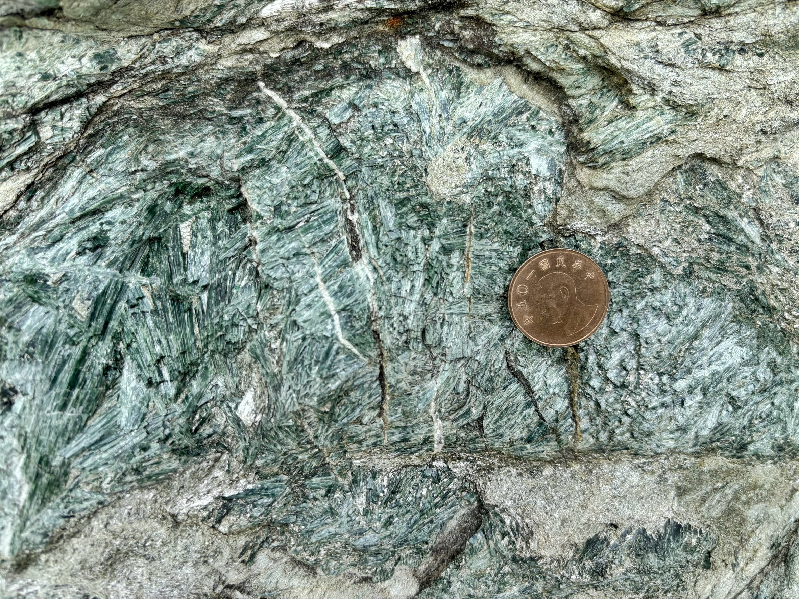

Thomas Yeo
Researcher
Department of GeologyNational Museum of Natural Science
Taichung, Taiwan R.O.C.
地科學組
國立自然科學博物館
臺中 臺灣
tjy.yeo[@]nmns.edu.tw
Please remove the brackets [ ] when sending an email.

Lenses of coarse-grained actinolite, Nishikashiyama mélange, Nagasaki, March 2025
Researcher
Department of Geologytjy.yeo[@]nmns.edu.tw
Please remove the brackets [ ] when sending an email.